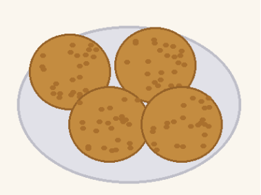

Classic Anzac Bisuits
A chewy, golden bisuit with a history dating back to
World War I.

Ingredients
- 1 cup rolled oats
- 1 cup plain flour
- 1 cup brown sugar
- 3/4 cup desiccated coconut
- 125 g butter
- 2 tablesppons golden syrup
Method
- Preheat the oven to 160°C
- Mix the dry ingredients in a bowl
- Melt the butter and golden syrup together
- Stir the wet mix into the dry mix.
- Roll into balls and bake
Baking guide
| Texture |
Time |
Temperature |
| Chewy |
12 minutes |
160°C |
| Crunchy |
18 minutes |
160°C |
Find out more
Read about the history at the Australian War Memorial